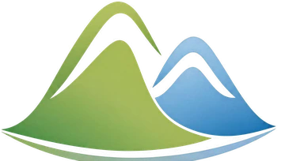
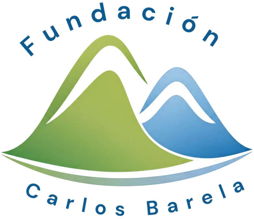

01
Acompañamiento
Vamos contigo a citas médicas, al hospital, al banco o a una oficina, para que no tengas que ir solo.

FundaciónCarlos Barela Pedir ayudaVoluntarios latinos en Montreal
Desliza para ver el viaje
Caracas · Venezuela
7 horas · 4.000 km
Montréal · Québec
Fundación Carlos Barela
Somos voluntarios latinos que acompañan, visitan, llevan a sus citas y orientan a quien está solo: abuelitos, enfermos y recién llegados.
Ver cómo ayudamos ↓Qué hacemos
Vamos contigo a citas médicas, al hospital, al banco o a una oficina, para que no tengas que ir solo.
Visitamos a abuelitos y personas enfermas en su casa, residencia u hospital. Compañía y conversación en español.
Te llevamos a tus citas, compras y diligencias cuando no tienes cómo moverte, con nieve o sin nieve.
Te ayudamos con el francés y el inglés en citas, llamadas, cartas y formularios.
Te orientamos y te conectamos con abogados y clínicas jurídicas de confianza que pueden revisar tu caso.
Te guiamos con la tarjeta de salud, papeles, ayudas del gobierno y todo lo que hay que hacer al llegar a Quebec.
Encuentros entre latinos para hacer amigos, compartir una arepa y sentirse en casa aunque estemos lejos.
Cómo funciona
Tú o un familiar, por WhatsApp, llamada o el formulario.
Nos cuentas tu situación con calma, en español y en confianza.
Buscamos a la persona indicada para lo que necesitas.
No te dejamos solo: seguimos pendientes de ti.

Quiénes somos
Somos venezolanos y latinos que también llegamos de lejos. Sabemos lo que es enfermarse sin nadie que te lleve al médico, envejecer lejos de la familia o pelear con el francés y los trámites. Por eso nos organizamos: para que ningún latino en Montreal pase por eso solo.
Súmate
Entonces ya puedes ayudar. Buscamos voluntarios que manejen, hablen francés, sepan de leyes o salud, o simplemente quieran visitar a un abuelito que está solo.
Preguntas frecuentes
No. Somos voluntarios y nuestro acompañamiento es gratuito.
Sí. Muchas veces nos escriben hijos o nietos que viven lejos. Cuéntanos la situación y buscamos un voluntario que lo visite o lo acompañe.
Sí. Ayudamos a todos los latinos sin importar su situación migratoria. Tu información es confidencial.
Te orientamos y te conectamos con abogados y clínicas jurídicas de confianza que pueden revisar tu caso. Las decisiones legales siempre las debe tomar un profesional autorizado.
Escríbenos por el formulario o WhatsApp contándonos cómo te gustaría ayudar y en qué horarios. No necesitas experiencia, solo ganas.
Contacto
Cuéntanos qué necesitas y te respondemos lo antes posible.